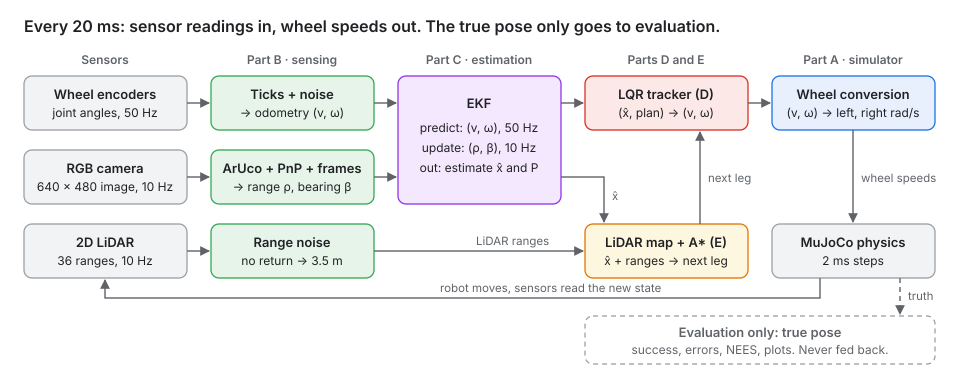
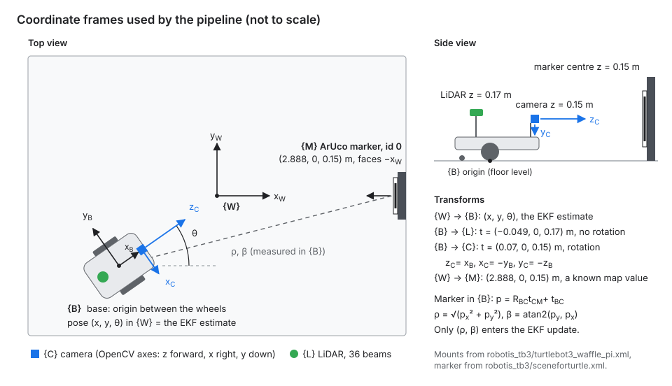
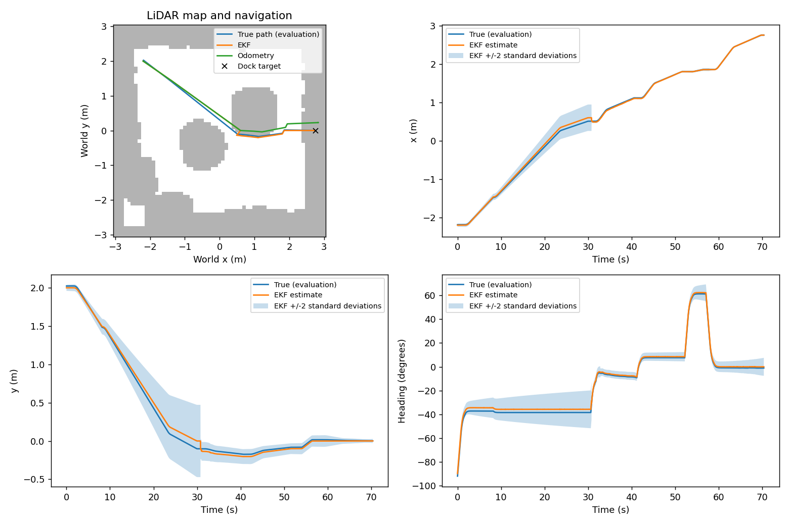
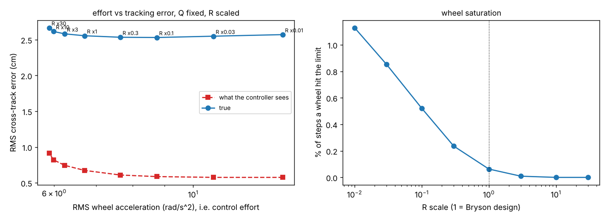
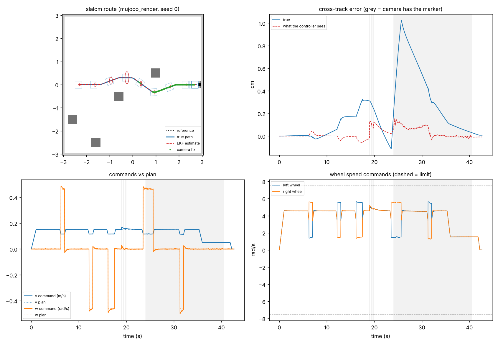
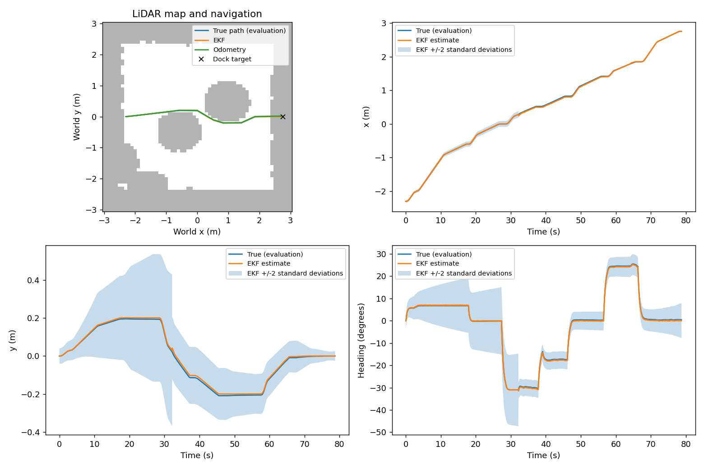
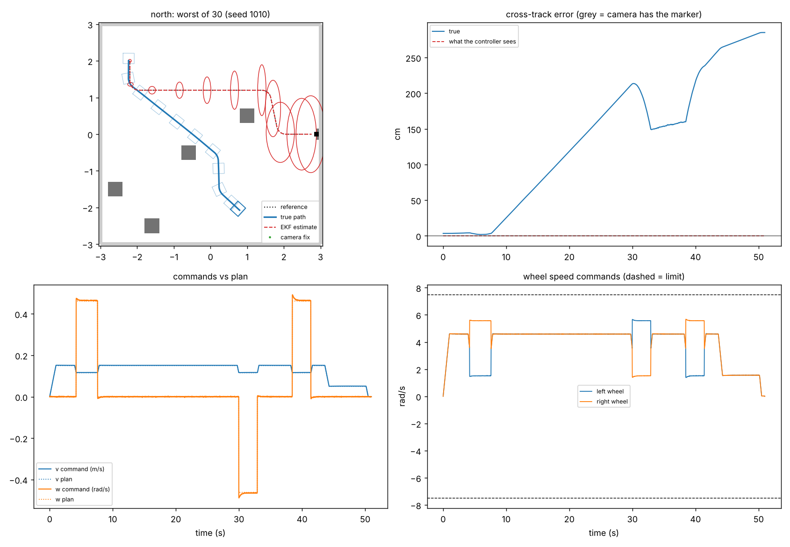

Demo video
Watch on YouTube (5 minutes). It shows [the nominal run, the disturbed run (90% left motor and camera loss), and the estimate with its ±2σ band next to the true pose; edit to match the video].
Overview
The robot starts in a 6 m × 6 m room with four boxes, maps them with its LiDAR, plans a path around them with A*, and docks in front of an ArUco-marked charging station. Every command comes from the EKF's estimate. The simulator's true pose is used only to score runs.

Part A: model
The state is the robot's pose in the world frame, and the inputs are forward speed and turn rate. Robot numbers come from robotis_tb3/turtlebot3_waffle_pi.xml: wheel radius \(r = 0.033\) m, wheel separation \(L = 0.288\) m, wheel speed limit ±7.88 rad/s (so at most 0.26 m/s), control period \(\Delta t = 0.02\) s.
Motion model and its Jacobians (used by the EKF)
\[ \dot x = v\cos\theta, \quad \dot y = v\sin\theta, \quad \dot\theta = \omega \qquad\Rightarrow\qquad \mathbf{x}_{k+1} = \mathbf{x}_k + \Delta t \begin{bmatrix} v_k\cos\theta_k \\ v_k\sin\theta_k \\ \omega_k \end{bmatrix} \] \[ F = \frac{\partial f}{\partial \mathbf{x}} = \begin{bmatrix} 1 & 0 & -v_k\Delta t\sin\theta_k \\ 0 & 1 & v_k\Delta t\cos\theta_k \\ 0 & 0 & 1 \end{bmatrix}, \qquad G = \frac{\partial f}{\partial \mathbf{u}} = \begin{bmatrix} \Delta t\cos\theta_k & 0 \\ \Delta t\sin\theta_k & 0 \\ 0 & \Delta t \end{bmatrix} \]Tracking-error model (used by the LQR)
The error to the reference is rotated into the robot frame (ahead, left, heading). Linearising about the reference speeds and dropping products of small terms gives
\[ \mathbf{e}_{k+1} = A\,\mathbf{e}_k + B\,\delta\mathbf{u}_k, \qquad A = \begin{bmatrix} 1 & \omega_{ref}\Delta t & 0 \\ -\omega_{ref}\Delta t & 1 & v_{ref}\Delta t \\ 0 & 0 & 1 \end{bmatrix}, \qquad B = \begin{bmatrix} -\Delta t & 0 \\ 0 & 0 \\ 0 & -\Delta t \end{bmatrix} \]Camera measurement model
\[ \mathbf{z} = h(\mathbf{x}) = \begin{bmatrix} \sqrt{(m_x - x)^2 + (m_y - y)^2} \\ \operatorname{atan2}(m_y - y,\ m_x - x) - \theta \end{bmatrix}, \qquad H = \begin{bmatrix} -\frac{m_x - x}{\rho} & -\frac{m_y - y}{\rho} & 0 \\ \frac{m_y - y}{\rho^2} & -\frac{m_x - x}{\rho^2} & -1 \end{bmatrix} \]Assumptions
- Kinematic model. The wheel servos (gain 5 in the XML) reach the commanded speed within a control step, so motor dynamics are left out.
- No wheel slip. This did not hold for the model as supplied, which slipped about 15% driving straight and 30% turning. Giving the caster balls contact priority and lifting the chassis collision shape 2 mm clear of the floor brought slip under 1% (
part_e_integration/sim.py, found in Part D). - Flat floor, small errors. The error model assumes small errors and a reference speed that is constant over one step.
Controllability and observability
| Check | Matrix | Rank | Meaning |
|---|---|---|---|
| Controllability, \(v_{ref} = 0.2\) m/s | \([B,\ AB,\ A^2B]\) | 3 | All three errors can be driven to zero. |
| Controllability, \(v_{ref} = 0\) | \([B,\ AB,\ A^2B]\) | 2 | A sideways error can't be fixed while stopped, so the robot corrects it on the approach. |
| Observability, encoders only | \(C = 0\) | 0 | Odometry never measures the pose, so its error grows. |
| Observability, camera full pose | \(C = I_3\) | 3 | Would fix every state. |
| Observability, range and bearing, moving or turning | \([H_0;\ H_1F_0;\ H_2F_1F_0]\) | 2 | One marker leaves a rotation about the marker unobservable. The known start and odometry keep the local EKF working. |
Model check against MuJoCo
[Gabriel: re-run validatemodel.py after it loads the robot through sim.load(), then replace this line.] With wheel speeds of 2 and 4 rad/s for 10 s, odometry through the model ends 0.8 cm and 0.9° from MuJoCo's pose with the contact fix, and 37.6 cm and 57.8° without it.
Part B: sensing and frames

| Sensor | Model in the code | Why |
|---|---|---|
| Wheel encoders, 50 Hz | Angle rounded to 4096 ticks per turn, plus Gaussian noise of 1 tick | The Dynamixel servo's resolution; the extra tick stands in for backlash |
| 2D LiDAR, 10 Hz | 36 beams every 10°, 0.12 to 3.5 m. σ = 7.5 mm below 0.5 m, else 2.5% of range. No return becomes 3.5 m | Half the LDS-01 datasheet bounds (±15 mm, ±5%) taken as one standard deviation |
| RGB camera, 10 Hz | 640 × 480, 60° vertical field of view, so f = 415.7 px and the centre is (320, 240); no distortion | Pinhole model of MuJoCo's camera |
| ArUco marker | DICT_4X4_50, id 0, 0.16 m black square, pose from solvePnP (IPPE square) | The marker plate is 0.20 m with a white border |
Rejected camera readings. Wrong marker id, a marker under 30 px a side (about 2.2 m away), a failed PnP solve, or a pose behind the camera or past 3.5 m. The EKF's innovation gate is a second check.
Calibration
[Dinel: calibration method, number of views, reprojection error, and the calibrated K compared with the nominal K above.]
Measured camera noise
[Dinel: range and bearing bias and standard deviation at three distances and angles. Until this is in, the EKF uses design values of 3 cm and 1°.]
Part C: estimation
An extended Kalman filter fuses wheel odometry (predict, 50 Hz) with range and bearing to the known marker (update, up to 10 Hz). Full report: PART_C_ESTIMATION.md.
\[ \hat{\mathbf{x}}^- = f(\hat{\mathbf{x}}, \mathbf{u}, \Delta t), \qquad P^- = F P F^\top + Q \] \[ \boldsymbol\nu = \mathbf{z} - h(\hat{\mathbf{x}}^-), \qquad S = H P^- H^\top + R, \qquad K = P^- H^\top S^{-1} \] \[ \hat{\mathbf{x}} = \hat{\mathbf{x}}^- + K\boldsymbol\nu, \qquad P = (I - KH)\,P^-(I - KH)^\top + KRK^\top \]| Setting | Value | Reason |
|---|---|---|
| Q, per 20 ms | diag(1 mm, 1 mm, 0.2°)² | Motion the kinematic model misses; kept after the tuning study below |
| R, per reading | diag(3 cm, 1°)² | Design value until Part B's measured noise is in |
| Initial P | diag(2 cm, 2 cm, 1.5°)² | The placement error used in random trials |
| Gate | reject if NIS > 9.21 | 99% chi-square bound for two measurements |
Tuning: consistency against responsiveness
Nine rendered-camera trials were recorded, then replayed through each noise setting, so every variant sees identical inputs.
| Variant | Mean position RMSE (cm) | Mean NEES | x within ±2σ | Rejects per trial |
|---|---|---|---|---|
| Kept: Q × 1, R × 1 | 3.77 | 2.23 | 88.2% | 1.22 |
| Q × 0.1 | 3.66 | 6.32 | 72.6% | 1.22 |
| Q × 10 | 3.97 | 0.72 | 99.2% | 1.11 |
| R × 0.1 | 3.90 | 6.70 | 81.4% | 5.67 |
| R × 10 | 3.70 | 0.82 | 99.5% | 0.00 |
| Encoder odometry only | 9.84 | 0.43 | 100% | 0 |
A smaller Q saves 0.11 cm but makes the filter overconfident (NEES 6.3). A smaller R rejects nearly five times as many readings. The baseline is the compromise. It is not fully consistent: mean NIS is 0.16 against an ideal of 2, because the rendered camera is close to deterministic.
Fresh-seed validation
| Scenario | Docked | Collisions | EKF RMSE (cm) | Odometry RMSE (cm) |
|---|---|---|---|---|
| West start | 3/3 | 0 | 2.99 | 6.51 |
| North start | 3/3 | 0 | 4.74 | 13.33 |
| South start, left motor at 90%, camera off 25 to 30 s | 3/3 | 0 | 3.70 | 8.82 |

Part D: control
A discrete LQR tracker drives the planned route and the dock approach, using only the EKF estimate. Full report: PART_D_CONTROL.md.
\[ \delta\mathbf{u}_k = -K(v_{ref}, \omega_{ref})\,\mathbf{e}_k, \qquad K = (R + B^\top P B)^{-1} B^\top P A, \qquad \mathbf{u} = \mathbf{u}_{ref} + \delta\mathbf{u} \]| Weight (Bryson's rule) | Largest acceptable value | Why |
|---|---|---|
| \(e_x\), along the path | 0.10 m | Running a little late is harmless |
| \(e_y\), across the path | 0.05 m | About 0.25 m to the boxes, and docking needs it centred |
| \(e_\theta\), heading | 10° | |
| \(\delta v\), extra speed | 0.10 m/s | Cruise 0.15 m/s, top speed 0.26 m/s |
| \(\delta\omega\), extra turn rate | 0.60 rad/s | At 0.15 m/s a wheel saturates past 0.76 rad/s |
- Gains. On a straight at 0.15 m/s: \(\delta v = 0.99\,e_x\), \(\delta\omega = 11.5\,e_y + 3.8\,e_\theta\). Time constants are 1.0 s along, 0.30 s in heading and 1.9 s sideways.
- Gain schedule. K is re-solved for the plan's \((v_{ref}, \omega_{ref})\), never designed below 0.05 m/s, because at a standstill the sideways error is uncontrollable.
- Feedforward. \(\omega_{ref} = v_{ref}\,\kappa\) on the 0.25 m corner arcs. Cruise 0.15 m/s, acceleration 0.15 m/s², and 0.05 m/s for the last 0.30 m.
- Wheel limits. If either wheel would pass 95% of 7.88 rad/s, both are scaled by the same factor, so the robot keeps its curve and slows down.
- Docking. A 0.90 m straight along the marker's normal, stopping 5 cm from the marker. "Docked" means \(|e_x| < 1\) cm and \(|e_\theta| < 2°\) for 0.5 s, judged from the estimate.
Results on the Part D test bench
These trials use run_tracking.py with smooth hand-planned routes. The final pipeline drives A* legs instead (Part E), so the two sets of numbers are reported separately.
| 90 random trials, MuJoCo | Mean | SD | Worst |
|---|---|---|---|
| Docked within tolerance, no collisions | 90 / 90 | ||
| RMS cross-track error, true (cm) | 3.66 | 1.97 | 9.60 |
| RMS cross-track error the controller sees (cm) | 0.92 | 0.61 | 2.65 |
| EKF position error, RMS (cm) | 4.14 | 1.90 | 10.51 |
| Dock error sideways (cm) | 0.01 | 0.15 | 0.40 |
| Dock heading error (°) | −0.07 | 0.64 | 1.56 |
The controller holds what it sees to 0.9 cm; the true error is four times larger and almost all of it is estimation error. In 30 trials with the rendered camera, all 30 docked, with 2.53 cm true error against 3.08 cm for the fake camera on the same seeds.

| Left motor | Docked | Dock sideways (cm) | RMS feedback ω (rad/s) |
|---|---|---|---|
| 100% | 30/30 | 0.08 ± 0.13 | 0.025 |
| 90% | 30/30 | −0.20 ± 0.14 | 0.061 |
| 80% | 30/30 | −0.54 ± 0.15 | 0.123 |

Part E: integration and robustness
One loop connects Part B's sensing, Part C's EKF, a LiDAR planner and Part D's LQR. The planner builds a 0.10 m grid of the room from LiDAR hits, inflates them by 0.40 m, runs A*, and replans when a new scan blocks the current leg. Details: PIPELINE.md.
| Conditions (random placement 2 cm, 1.5°) | Seeds | Docked | Collisions | EKF RMSE (cm) | Odometry RMSE (cm) | True cross-track (cm) |
|---|---|---|---|---|---|---|
| West start | 30–32 | 3/3 | 0 | 2.66 | 5.24 | 1.69 |
| North start | 10–12 | 3/3 | 0 | 4.15 | 9.95 | 4.04 |
| South start, left motor at 90%, camera off 25 to 30 s | 20–22 | 3/3 | 0 | 4.13 | 13.00 | 4.21 |
The largest final errors across these nine trials were 0.40 cm along, 0.38 cm sideways and 1.39°. The same pipeline also docked in all 18 of Part C's trials. One failure was found and fixed during development: the inflated margin could cover the robot's own cell and freeze the planner, so a 0.15 m start allowance now lets it leave.
[Robustness batch: 10 seeds per condition, with longer camera loss, an 80% motor, stronger LiDAR noise and a larger start error. Say where each one breaks and which component fails.]

Limits
- One marker gives range and bearing only, so the rotation about the marker is unobservable; a second landmark or the marker's orientation would fix it.
- Unknown space counts as free, and the map never clears old hits, so large drift or moving obstacles make it conservative.
- The final 0.90 m straight assumes the dock corridor is clear.
- Q and R are simulation design values until the measured noise from Part B replaces R.
Ground truth is only used for evaluation
The controller and planner only ever receive the EKF estimate. The simulator's pose is read in three places, all after the commands for that step are computed:
Simulator.truth()andcollided()inpart_e_integration/sim.py: logging, success and collision scoring.truth()inpart_d_control/run_tracking.py: the test bench's referee and its pre-flight check.ekf.nees()and the replay scoring in Part C: consistency metrics after the fact.
Pipeline.step() takes wheel angles, time, a LiDAR scan and an image, and has no simulator argument. On the Part D test bench, a MuJoCo test re-runs a trial with truth() returning NaN and checks every wheel command is unchanged. That bench's fake camera also uses the true pose to work out what a camera would see, the way MuJoCo's renderer does; the integrated pipeline uses rendered images.
The slipping robot shows it from the other side: with the model as supplied, the controller kept its estimate on the plan while the real robot drifted up to 2.85 m. A controller reading the true pose would have steered back.

Code and how to run it
| Folder | Part | Owner |
|---|---|---|
part_a_modelling/ | A Modelling | Gabriel |
part_b_sensing/ | B Sensing | Dinel |
part_c_estimation/ | C Estimation | Abdul |
part_d_control/ | D Control | Andre |
part_e_integration/ | E Integration and robustness | [name] |
robotis_tb3/ | Robot model and scene | shared |
Tested with Python 3.10. From the repository root:
python -m venv .venv
.venv\Scripts\activate
python -m pip install -r requirements.txt
python -m unittest discover -s part_c_estimation -p "test_*.py" -v
python -m unittest discover -s part_d_control -p "test_*.py" -v
python part_e_integration/run_pipeline.py
python part_e_integration/run_pipeline.py --viewer
python part_e_integration/run_pipeline.py --start south --placement-noise --trials 3 --seed 20 --wheel-gain 0.9 1 --camera-dropout 25 30
python part_c_estimation/evaluate_estimator.py --collect
python part_d_control/run_tracking.py --camera synthetic --reportIn order: install, the two test suites, one nominal run (plots go to part_e_integration/results_pipeline/), the same run in the MuJoCo viewer, the disturbed set, Part C's tuning study, and Part D's batches (about 20 minutes). On macOS or Linux, activate with source .venv/bin/activate.
Individual contributions
| Member | Contribution |
|---|---|
| Gabriel | [In your own words: what you built, decided and tested.] |
| Dinel | [In your own words.] |
| Abdul | [In your own words.] |
| Andre | [Draft, edit in your own words:] Designed and wrote the LQR tracker (error model, Bryson weights, gain schedule, turn-rate feedforward, wheel limits, docking). Built the Part D test bench and ran the repeated-trial, design-comparison, effort and weak-motor studies. Found and fixed the floor-contact slip, and wrote the ground-truth checks and the Part D report. |
| [name] | [Integration: simulator access, Part B adapter, LiDAR planner, pipeline runner and validation.] |
Generative AI declaration
| Tool | Used by | Purpose |
|---|---|---|
| Claude (Anthropic) | Andre | Help designing, writing and testing the Part D controller, test bench and report; reviewing the repository; drafting this page. |
| OpenAI Codex | [who] | Integration code, Part C implementation, tests, evaluation tooling and documentation, as stated in PIPELINE.md and PART_C_ESTIMATION.md. |
| [tool] | [who] | [purpose] |
[Each member confirms they have reviewed the code in their part and can explain it.]
Acknowledgements
- TurtleBot3 Waffle Pi model by ROBOTIS, from MuJoCo Menagerie, Apache 2.0 licence (
robotis_tb3/LICENSE). - 41014 tutorial code: [which weeks and what was adapted, e.g. the Week 2 encoder and odometry code].
- MuJoCo, OpenCV (ArUco), NumPy, SciPy and Matplotlib.